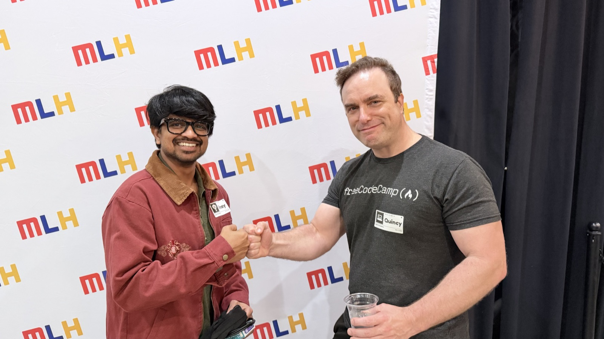
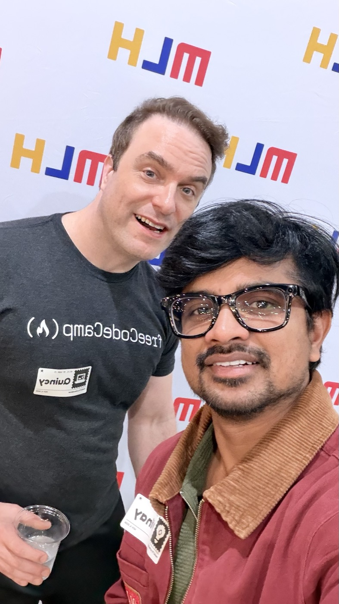
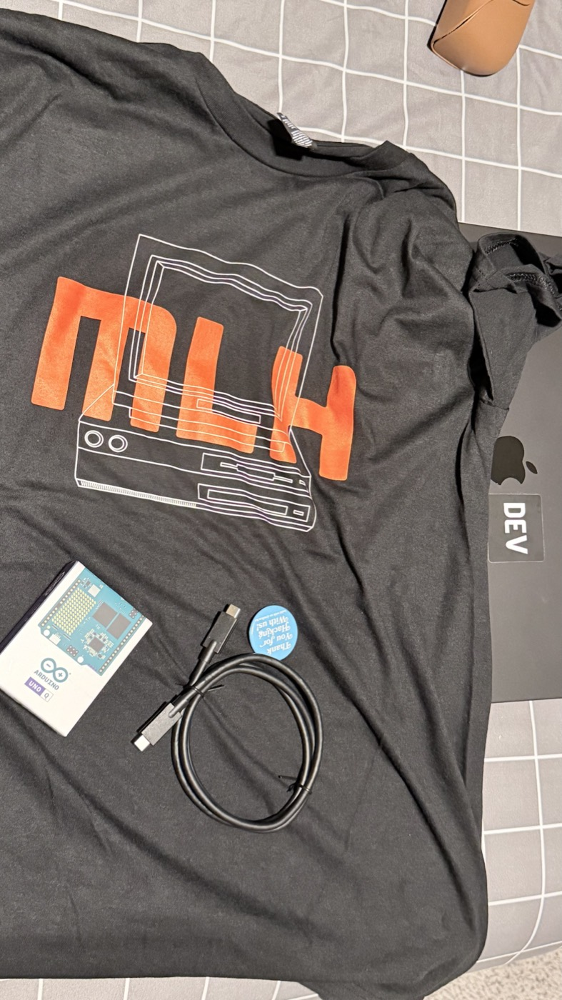

I recently attended the MLH AI Roadshow alongside HackUTD in Richardson. The first thing I noticed was the energy. Students were not merely listening to people talk about AI; they were trying tools, exchanging ideas, finding teammates and thinking about what they could build.
That is what makes a hackathon environment special. It temporarily removes the distance between an idea and an attempt. Nobody needs to arrive with a polished company or a perfect plan. Curiosity, a laptop and the willingness to ask for help are enough to begin.
The most exciting thing in the room was not a particular model or demo. It was the number of people who believed they could make something.
A surprise guest—and a genuine fanboy moment
To my surprise, Quincy Larson, the founder of freeCodeCamp, was there to give a keynote. He spoke about becoming ready for an AI-shaped world while still making meaningful contributions. That balance mattered to me. AI readiness is not only about knowing the newest model or framework. It is also about using what we learn to help, teach and build things that matter.
Meeting Quincy after the session was a genuine fanboy moment. My friends and I have used freeCodeCamp to learn over the years. Like so many developers, I knew the platform first as a quiet source of practical help: open a lesson, follow the explanation, build something and keep moving. Meeting the person who started it made that familiar resource feel personal.

I told Quincy how much freeCodeCamp had meant to us and asked the question I had wanted to ask: what made him start it? His answer returned to access. He wanted people to have a way to learn that did not put cost in front of opportunity.
How freeCodeCamp can remain free
That answer also made me think about the operating model behind the mission. Free learning is not costless to create or run. Servers, staff, curriculum development and community support all require real work and resources. What makes freeCodeCamp unusual is how it organizes that work.
An open learning loop
- A public charity: freeCodeCamp is a donor-supported 501(c)(3) nonprofit, rather than a course business waiting to place its best lessons behind a paywall.
- An open-source platform: its curriculum and software can be inspected, improved and extended by the community.
- Thousands of contributors: people help with code, curriculum, documentation, feedback and support—turning former learners into future teachers and maintainers.
- Free access stays the product: lessons, projects and verified certifications remain available without a subscription.
This does not mean “free” happens by magic. It means the cost is shared through donations, grants, staff work and community contribution so that a learner does not have to pay at the moment they are trying to begin. That is a powerful design choice.
Quincy encouraged us to contribute to the project. The freeCodeCamp contribution guide makes clear that contributing is broader than writing a major feature. People can improve curriculum, fix small issues, strengthen documentation, give feedback or help answer questions. Open source gives technical learning a second direction: after receiving help, we can help improve the path for the next learner.

Why gatherings like this still matter
The MLH team spoke about the importance of hackfests and made the event feel welcoming, right down to the goodies they shared. The shirt, Arduino and small pieces of gear are fun reminders, but the more valuable gift was permission to experiment.

Hackathons give students a place to test skills before they feel fully ready. They make collaboration normal, expose people to open source and turn abstract technologies into weekend-sized challenges. Even an unfinished project can teach architecture, teamwork, debugging and the confidence to try again.
I left energized by the students, grateful for the conversation and more interested in contributing to freeCodeCamp. The evening connected three ideas I care about deeply: learning should be accessible, building is one of the best ways to learn, and knowledge becomes more valuable when we pass it forward.
A platform stays free because people choose to support it. A community stays alive because some of its learners eventually become contributors.